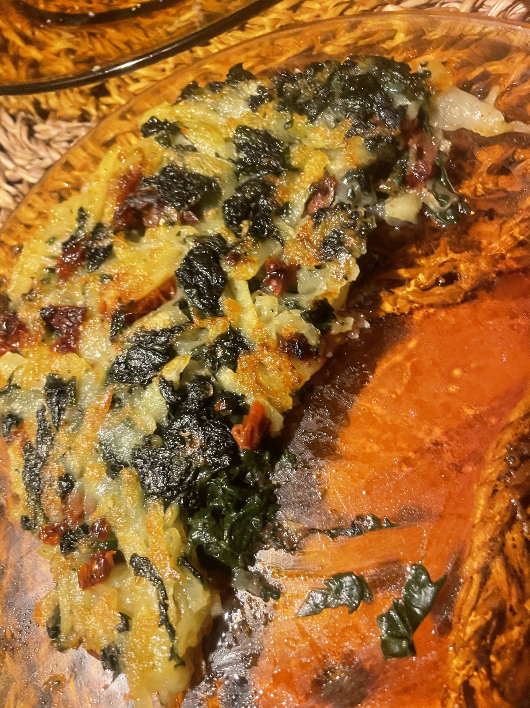

Rösti de patata, espinaca, tomate seco y parmesano
Ingredientes
2×
- 2 patatas
- 2 puñados de espinacas
- 4 tomates secos
- 30 g de parmesano rallado
- sal
- pimienta
- aceite de oliva

Preparación
Paso 1
Rallar 2 patatas y escurrirlas bien. Mezclar con 2 puñados de espinacas picadas, 4 tomates secos en trocitos, 30 g de parmesano rallado, sal y pimienta.
Paso 2
Calentar una sartén con aceite de oliva, extender la mezcla aplastándola y cocer a fuego medio unos 10min por cada lado, hasta que esté dorada.
Resumen
2 patatas
2 puñados de espinacas
4 tomates secos
30 g de parmesano rallado
sal
pimienta
Rallar escurrirlas Mezclar
aceite de oliva
Calentar extender cocer